地政学
北海道は日本の北方に広がる島で、ロシア極東、北太平洋、オホーツク海に向き合います。札幌は道庁、大学、医療、報道を束ね、港、空港、自衛隊、離島、農地を介して食料安全保障と北方外交を日常に引き寄せる都市です。

🇯🇵 日本 / 北日本 / World City Atlas
札幌を中心に、石狩平野、雪の気候、アイヌの記憶、開拓と近代化、農業と食品、観光、港湾空港、冬の住まいが重なる北日本の広域都市圏です。
都市の骨格
北海道・札幌は一つの市街地だけでは読めません。札幌の官庁、大学、病院、商業、地下街を軸に、石狩湾新港、新千歳空港、小樽、旭川、函館、帯広、釧路、稚内の役割が広い島をつないでいます。
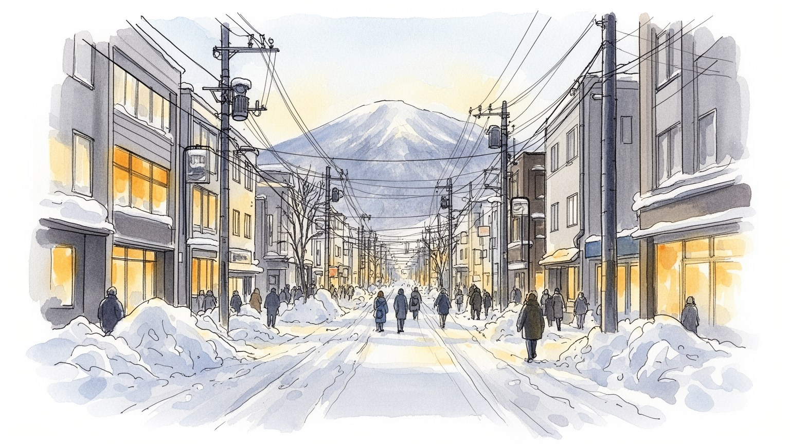
北海道は日本の北方に広がる島で、ロシア極東、北太平洋、オホーツク海に向き合います。札幌は道庁、大学、医療、報道を束ね、港、空港、自衛隊、離島、農地を介して食料安全保障と北方外交を日常に引き寄せる都市です。
農業、酪農、漁業、食品加工、観光、建設、物流、医療、教育、ITが雇用を支えます。季節労働、除雪、観光繁忙期、広域配送、介護人材の不足も重く、札幌への集中と地方都市の縮小が同時に進む現実があります。課題です。
アイヌの記憶、開拓期の神社、寺院、教会、雪まつり、大学文化、食の祭り、野球とサッカー、冬の暮らしが重なります。北海道らしさは新しさだけでなく、先住性、移住、労働、自然への畏れを含む文化として続きます。
旅行者は札幌、小樽、温泉、スキー、富良野、知床、函館、食を楽しむが、住民には雪道、暖房費、医療距離、交通維持、人口減少が現実です。観光と暮らしの両方を支える公共交通と地域医療が今も問われています。
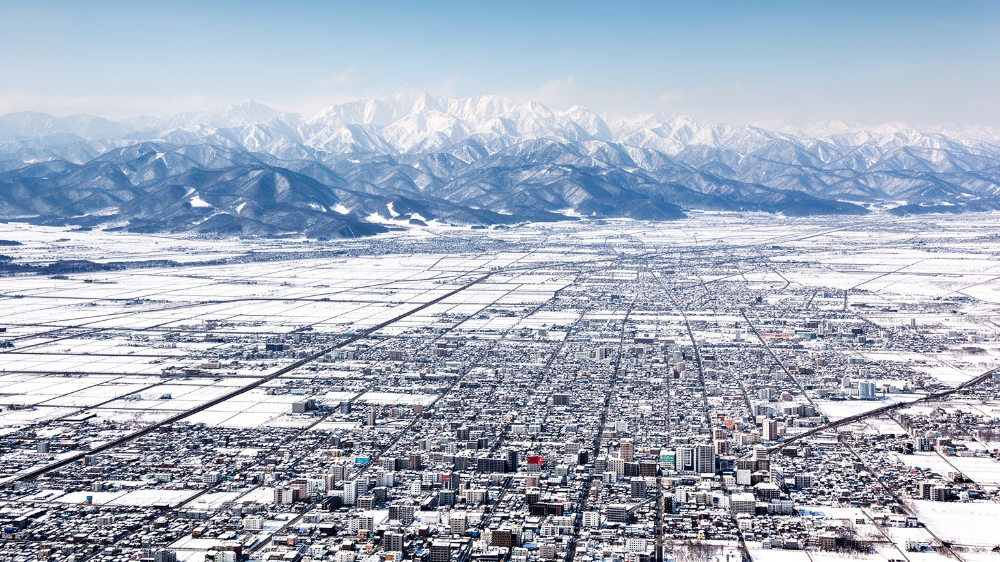
北海道・札幌を読む第一の入口は、都市が広大な島の中枢として置かれていることです。札幌は石狩平野の扇状地に広がり、背後に手稲山や藻岩山、前面に石狩湾、南東に新千歳空港を持ちます。道庁、大学、主要病院、放送局、商業、地下鉄、地下街が集中し、道内各地の行政、医療、進学、買い物、企業活動を受け止めます。ですが北海道全体は一つの都市圏ではありません。小樽の港、苫小牧の工業港、函館の歴史港、旭川の内陸拠点、帯広の農業地帯、釧路の漁業と湿原、稚内と根室の北方の玄関が、それぞれ札幌とは違う役割を持ちます。距離は大きく、冬の天候は移動を変えます。札幌の便利さは、広い島の不便さと表裏一体です。都市を理解するには、中心部の碁盤目だけでなく、高速道路、JR、空港、港、峠、農地、雪で閉ざされる道を同じ地図に置く必要があります。北海道の都市性は密度よりも広域接続にあり、札幌はその結び目として機能しています。道内の人にとって札幌は買い物や進学の目的地であると同時に、専門医療や行政手続きへ向かう最後の受け皿でもあります。逆に札幌は、周辺の農地、漁港、発電所、観光地、地方空港なしには成り立たありません。中心と周縁の依存関係を読むことが、この都市の地理を読むことになります。広い島の首都性は、人口密度ではなく、遠く離れた生活圏をどれだけ支えられるかで測られます。
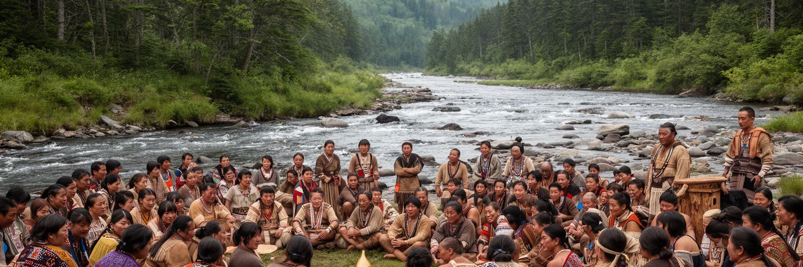
北海道の都市を語る時、アイヌの歴史は周辺的な民俗ではなく、土地を理解する中心に置かれるべきです。石狩川、豊平川、海、森、狩猟、漁労、交易、儀礼は、札幌が近代都市になる以前から人の暮らしを支えていました。明治以降の開拓政策は、道路、農地、学校、鉄道、官庁を整えた一方、アイヌの土地利用、言語、生活技術、信仰を大きく損なりました。市街地の碁盤目や開拓使の建築は近代化の象徴として語られやすいが、その背後には先住の場所が国家の制度へ組み替えられた経験があります。近年、博物館、文化継承、言語復興、地名の再評価、工芸や舞踊の発信が進むが、観光用の飾りとして消費される危険も残ります。札幌を歩くことは、開拓の成功物語だけでなく、誰の土地で、誰の記憶が見えにくくされたのかを問うことでもあります。アイヌの記憶を都市の中心に戻すことは、過去を責めるためだけではなく、北海道の現在を正確に読むための基礎です。地名、川筋、祭礼、工芸、食、語り部の言葉には、地図に残らない知識があります。学校や観光施設で何を説明し、何を沈黙させるかは、都市の公共性に関わります。尊重とは記念品を増やすことではなく、権利、教育、土地の記憶を日常の制度へ戻すことです。都市の案内板や学校教育がその層を扱う時、札幌の景観はより正直なものになります。聞く姿勢もまた都市文化です。
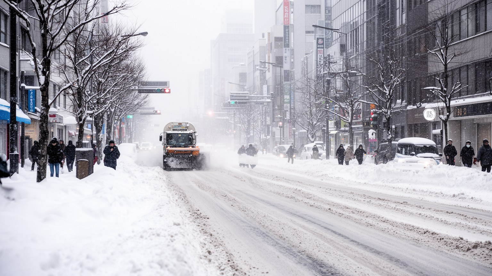
札幌の都市生活は、雪を背景にした美しい景色だけでは説明できません。冬の積雪は道路幅、歩道、排水、屋根、暖房、地下街、バス運行、通勤時間、学校、商店の営業時間を変えます。除雪車、排雪場、ロードヒーティング、滑り止め、地下歩行空間、暖房設備は、都市を動かす見えにくい基盤です。雪は観光資源であり、札幌雪まつりやスキー場の魅力を作りますが、住民には転倒、渋滞、暖房費、独居高齢者の雪かき、宅配遅延、灯油価格として現れます。気候変動によって雪の降り方は不安定になり、厳寒、湿った大雪、雨氷、夏の暑さが新しい負担を生みます。北海道の冷涼さは農業や観光の価値でもありますが、冬を越す費用と労働を誰が担うかという社会問題でもあります。札幌を読むには、白い街の印象だけでなく、雪を片づけ、熱を保ち、移動を止めない技術と人の仕事を見る必要があります。冬の都市運営は、北国の公共性そのものです。雪に慣れた都市でも、歩道の段差、バス待ちの寒さ、除雪後の雪山、住宅街の見通しは弱い人を直撃します。子ども、高齢者、障害のある人、夜勤者、配送員が安全に動けるかで、冬の都市の成熟度が分かります。雪を楽しむ都市であるためには、雪に苦しむ人を減らす制度が必要になります。気象情報、近所の見守り、除雪予算の配分までが、冬の暮らしを支える政策になります。日々の備えも欠かせません。
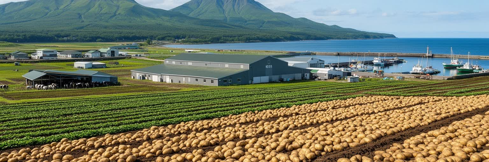
北海道の存在感は、食料生産の大きさと切り離せません。石狩、十勝、上川、オホーツク、根釧、道南の農地と牧場は、米、小麦、馬鈴薯、甜菜、豆、野菜、乳製品、肉を生み、沿岸の漁港は鮭、昆布、帆立、蟹、イカ、さまざまな魚を都市の食卓へ送ります。札幌の市場、ラーメン、ジンギスカン、スープカレー、菓子、ビール、乳製品は、広域の農漁業と食品加工に支えられています。食の豊かさは観光の強みですが、農家の高齢化、担い手不足、飼料や燃料価格、気候変動、漁獲量の変化、物流費の上昇は地域を揺らします。大規模で効率的な農業ほど、機械、道路、倉庫、港、冷蔵、加工、金融が必要になります。北海道を食の楽園としてだけ見ると、生産現場の労働とリスクを見落とします。札幌の飲食文化を読むことは、遠い畑や漁場の季節、技能、投資、気候不安を読むことでもあります。食料基地としての北海道は、日本の都市生活を支える重要な安全網です。都市の消費者が安定した価格で食べられる背景には、早朝の搾乳、寒い港の水揚げ、農機の整備、品質管理、長距離輸送があります。ブランド化で価値を高めることと、働く人の所得を守ることを両立できるかが、食の未来を左右します。食文化の魅力は、皿の上だけでなく、生産地の持続性まで含めて評価されるべきです。都市の食卓は、農村と漁村の未来を映す鏡でもあります。
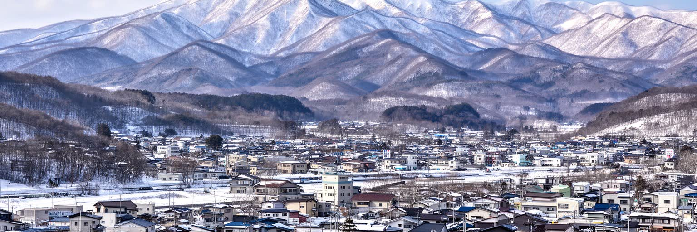
北海道観光は、札幌の雪まつりや市場ですけで完結しません。小樽の運河、函館の港町、富良野と美瑛の丘、ニセコの雪山、知床の自然、釧路湿原、登別や洞爺の温泉、旭山動物園、流氷、花畑、広い道路が、季節ごとに違う旅を作ります。観光は宿泊、飲食、交通、農産物、土産、ガイド、清掃、通訳、スキー場運営を支える大きな産業であり、海外客の増加はニセコや札幌の不動産にも影響します。一方で、観光地の混雑、レンタカー事故、自然環境への負荷、短期滞在住宅、季節雇用、物価上昇は地域の暮らしを変えます。自然は無限の背景ではなく、ヒグマ、雪崩、低温、火山、湿原保護、海鳥、流氷の変化と向き合う生きた環境です。北海道を観光から読むには、広い景色を消費するだけでなく、移動距離、地域の受け入れ能力、環境保全、働く人の住まいを見る必要があります。旅の魅力は、住民の生活基盤が保たれてこそ続きます。人気の季節が集中すると、宿泊費、交通、飲食店の人手、医療対応も逼迫します。公共交通で行ける場所を増やし、自然のルールを伝え、地域に収益を戻す仕組みがなければ、広い北海道の魅力は一部の場所へ過度に集まってしまいます。分散して長く滞在する旅を増やすことが、地域の負担を軽くし、学びの深い観光を育てます。自然を守る説明も、旅の品質そのものになります。移動の計画性も重要です。
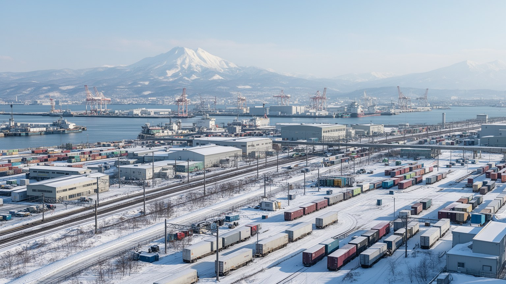
北海道の産業は一次産業だけではありません。札幌には行政、医療、教育、IT、広告、金融、商業が集まり、石狩湾新港、苫小牧港、新千歳空港、函館港、釧路港は食品、燃料、木材、紙、機械、観光客、郵便を動かします。食品加工、製紙、建設、再生可能エネルギー、データセンター、コールセンター、バイオ研究も地域経済の一部です。広い島では物流費が産業の条件になります。冬の高速道路、鉄道貨物、フェリー、空港、冷蔵倉庫、トラック運転手の不足は、価格と供給に直結します。札幌への集中は仕事とサービスを集めるが、地方都市では人口減少、商店街の縮小、病院維持、学校統廃合が進みます。北海道の経済を見るには、札幌のオフィスだけでなく、港湾作業、倉庫、農協、漁協、工場、除雪、配送、観光バス、介護の現場を同時に見る必要があります。距離と気候を克服する仕組みこそが、北の産業の基盤です。半導体関連投資や再生可能エネルギーは新しい期待を生むが、水、電力、人材、住宅、交通を整えなければ地域に根づかありません。産業政策は誘致だけでなく、働く人が冬を越して暮らせる条件まで含めて考える必要があります。物流と生活条件を同時に整えることが、広い島の産業競争力を支えます。札幌の成長と地方拠点の維持を両立できるかが、次の経済地図を決めます。人材育成と交通維持も同じ大きな課題です。
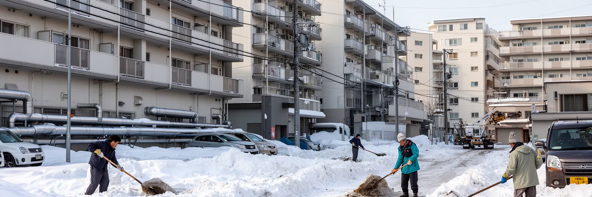
北海道の暮らしで住まいは気候への防御でもあります。断熱、二重窓、暖房、灯油やガス、集合住宅の共用部、屋根の雪、駐車場の除雪、バス停までの歩道は、生活の快適さだけでなく安全に関わります。札幌中心部では地下街と地下歩行空間が冬の移動を支え、郊外では車と除雪が日常を左右します。高齢者世帯、単身者、子育て世帯、学生、移住者では、雪かきや暖房費の負担が違います。古い住宅では断熱不足と燃料費が健康問題になり、地方では空き家、医療距離、買い物の不便が重なります。札幌のマンション建設は都市の便利さを高める一方、家賃、管理費、再開発による地価上昇も生みます。北海道の住宅問題は、広さや価格だけでは測れません。冬に安全に歩けるか、病院へ行けるか、停電時に熱を保てるか、近所が雪を助け合えるかが重要になります。北国の生活の質は、建物、交通、福祉、エネルギーを一体で考えることで初めて見えてきます。暖房を節約しすぎると健康を損ない、車を使えない人は冬に孤立しやすいです。住宅政策は断熱改修、公共交通、除雪、見守りを結びつける生活政策でもあります。寒さに強い住まいは、地域の医療費や介護負担を減らす基盤になります。冬を前提にした住まいづくりは、北国の福祉を具体化する最も身近な都市計画です。住まいの暖かさは、暮らしの尊厳にも直結します。地域の助け合いも問われます。
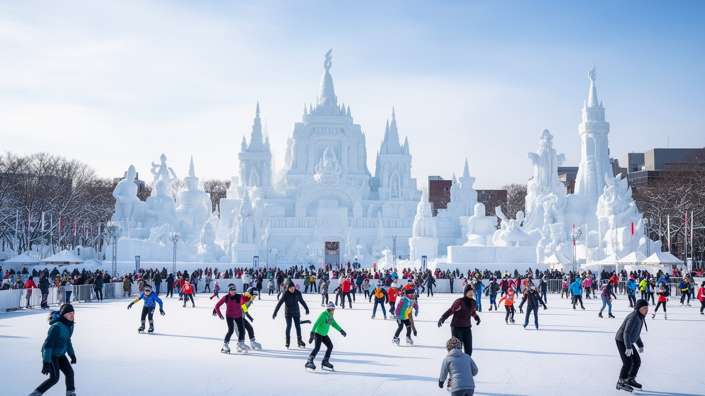
札幌の都市文化は、雪とスポーツを公共空間へ変える力を持ちます。札幌雪まつりは大通公園を巨大な展示場にし、冬の寒さを観光、技術、地域参加の場へ転換してきました。よさこいソーラン祭り、ビアガーデン、オータムフェスト、クリスマス市、大学祭、市場の催しは、短い夏と長い冬の間に街の時間を作ります。プロ野球、サッカー、スキージャンプ、マラソン、カーリング、スキーは、北海道の気候と広さを競技文化に結びつけます。大倉山や円山、札幌ドーム周辺、エスコンフィールドのような場は、観客の移動、商業、地域開発にも影響します。祭りとスポーツは楽しいイベントである一方、警備、清掃、交通、宿泊、ボランティア、スポンサー、地域住民の負担で成り立ちます。札幌の文化を読むには、明るい会場だけでなく、設営、除雪、交通整理、宿泊価格、近隣生活を含めて見る必要があります。季節を都市の魅力へ変える能力は、北海道の強い文化資本です。スポーツ施設の立地は、試合の日だけでなく、普段の交通、周辺商業、若者の参加機会を変えます。祭りも競技も、地元の人が誇りを持てる場であり続けるには、観光収益と生活への配慮を両立させる運営が必要になります。寒さを共有する行事は、匿名化しやすい大都市に地域の顔を取り戻す機会にもなります。応援の場は世代を越えた交流の場所にもなります。記憶も育ちます。
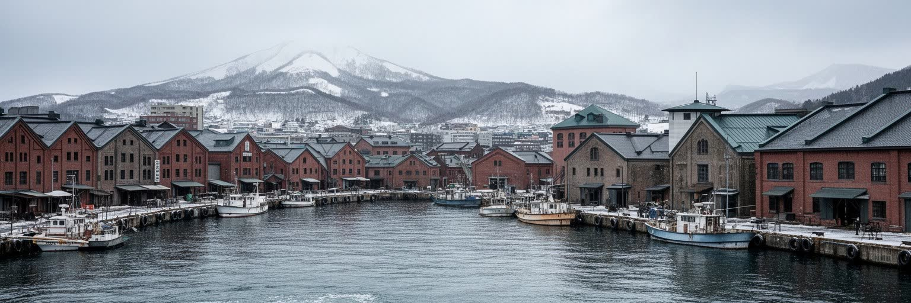
北海道の近代は、港と鉄道によって強く形作られました。小樽は石炭、ニシン、倉庫、銀行、鉄道を結ぶ商都として栄え、苫小牧は工業港とフェリーの拠点になり、函館は開港場として国際交易と異文化を受け入れました。札幌の官庁街や大学、農業試験場、屯田兵の制度は、国家が北の土地を編成した歴史と結びつきます。開拓という言葉は、道路や農地を作った努力を示す一方、アイヌの土地と生活を奪った制度の言葉でもあります。港町の倉庫、教会、坂道、鉄道跡、炭鉱遺産は、北海道が単なる自然の島ではなく、資源、移民、労働、国家政策で作られた地域であることを教えます。現在も港は燃料、食品、フェリー、観光、災害時輸送を担い、北方の海は漁業と安全保障の問題を運びます。北海道を読む時、フロンティアの明るい物語だけでは足りません。海から来た資本、人、制度、そして失われた生活を同時に見る必要があります。炭鉱閉山後の町、漁業の変化、鉄道路線の廃止は、近代を支えた場所が次に何を担うのかという問いを残します。港と鉄道の記憶は観光資源である前に、地域が働き方を変えてきた証拠でもあります。過去の産業を丁寧に読むほど、これからのエネルギー、物流、観光の選択も現実的に考えられます。フロンティアは過去形ではなく、土地の使い方を問い直す現在形の言葉でもあります。港の記憶は北の未来を考える手がかりです。
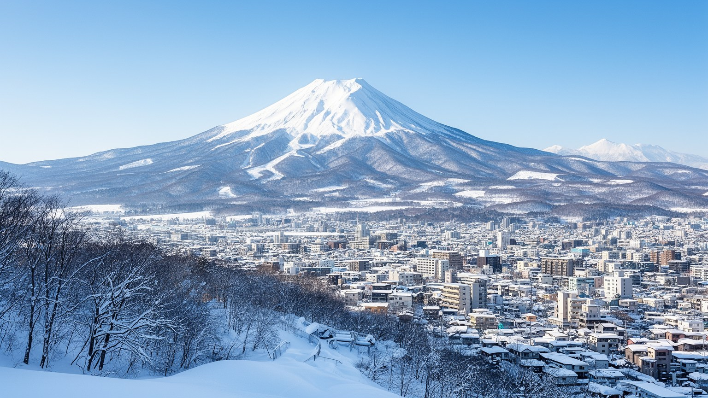
北海道・札幌を読むことは、北国の美しい風景を眺めるだけではなく、広い島を動かす制度、労働、記憶、気候を結び直すことです。札幌には道庁、大学、病院、商業、文化、地下街が集まり、道内各地の農地、港、空港、温泉、自然公園、漁場、地方都市とつながります。アイヌの記憶、開拓の歴史、雪の都市運営、食料生産、観光、北方の安全保障、人口減少は別々の話ではありません。どれも土地の広さ、冬の厳しさ、海と国境への近さに戻ってきます。旅行者が楽しむ雪景色や食は、除雪、暖房、農漁業、物流、厨房、観光労働に支えられています。住民は自然の豊かさに近い一方、医療距離、交通維持、暖房費、若者流出、地方の縮小に向き合います。北海道の価値は、都市と自然が近いことだけでなく、北の環境の中で人がどう住み、働き、記憶を引き継ぐかを示す点にあります。札幌はその入口であり、北海道全体を読むための結節点です。世界の北方都市と比べると、北海道は食料、観光、先住性、国境、気候適応を同時に抱える実験場でもあります。中心都市の成長だけでなく、広い地域の暮らしをどう維持するかを見れば、北海道の都市性はより立体的に見えてきます。北の島を読む視点は、豊かさと不便さ、記憶と開発、観光と生活を同じ地図へ置くことから始まります。そこに札幌を超えた北海道全体の読みごたえがあります。深い街です。